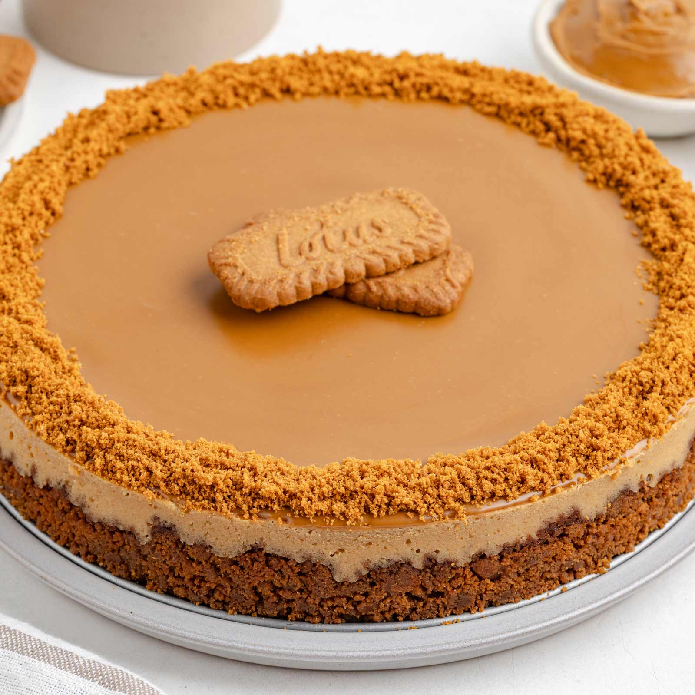
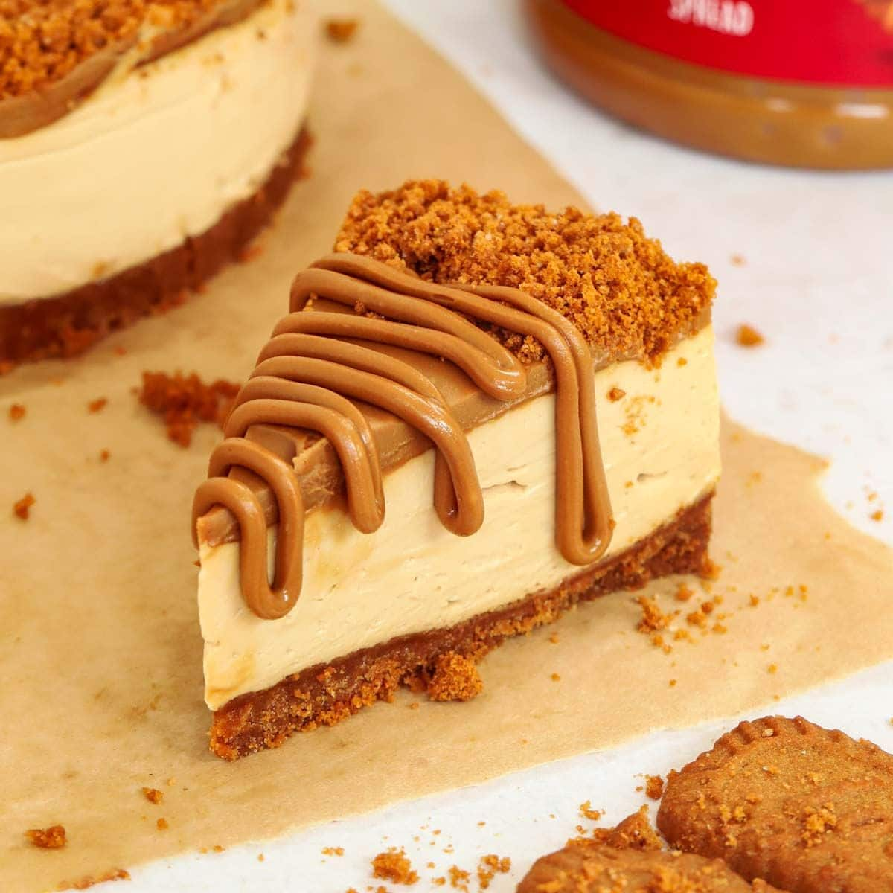

|
 |
Biscoff Cheesecake is a baked and/or chilled dessert. This recipe is a baked dessert. Biscoff Cheesecake combines the flavors of Biscoff cookies and cookie butter in a cheesecake filling. The flavors are warm and spiced with notes of cinnamon, caramel, and gingerbread. This cheesecake provides a fun twist on a classic dessert. |

Prep time: 40 Mins
Rest Time: 1 hr
Cooking time: 1 hr
Total Time: 2 hrs 40 minutes
Recipe by Camila Hurst